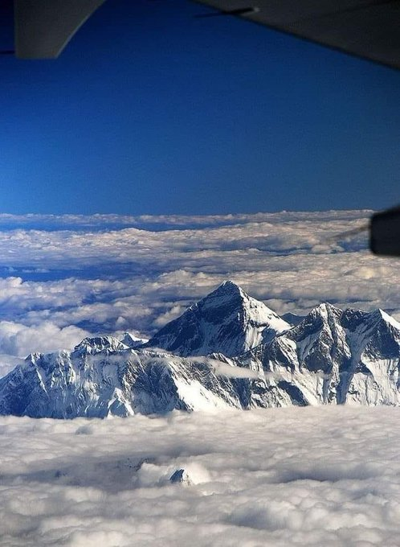

Nº1 MONTE EVEREST (8.848 METROS)
- Localización: Nepal/Tíbet
- Coronado en: 1953; Sir E. Hillary, T. Norgay
- Primer español en coronar: 4/3/1980; Martín Zabaleta
Bibliografia:
Con 8.848 metros de altitud el Monte Everest es el techo de la Tierra y marca la frontera entre China y Nepal. Debe su nombre occidental al británico George Everest, el topógrafo general de la India entre 1830 y 1814 y responsable de una expedición de reconocimiento del Himalaya. Estas montañas están divididas entre tres cordilleras: Siwaliks, Pequeño Himalaya y Gran Himalaya, donde está el Everest. La altura de la cumbre fue formulada por el matemático y topógrafo indio Radhanath Sikdar en 1852. Aunque su ascensión estaba considerada como uno de los mayores desafíos a los que se podía enfrentar al ser humano, en los últimos tiempos se ha convertido en la joya de la corona del alpinismo masificado